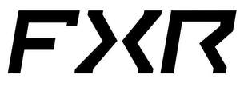
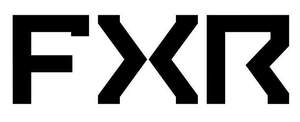
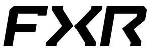
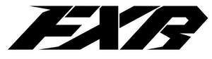
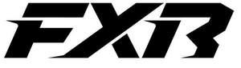
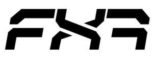

Trade Mark Journal No.2025/014 4 April 2025
UK00004177254 21 March 2025 (9,18,24,25,28,35)
Mark 1

Mark 2

Mark 3

Mark 4

Mark 5

Mark 6

- Class 9
- Bicycle helmets; Riding helmets; Helmets (Riding -); Visors for helmets; Headgear being protective helmets; Skateboard helmets; Snowboard helmets; Snowmobiling helmets; Safety helmets; Protective helmets; Helmets (Protective -); Crash helmets; Crash helmets for cyclists; Ski helmets; Helmets for use in sports; Sports helmets; Protection helmets for sports; Helmets for bicycles; Helmets for motorcyclists; Motorcycle helmets; Protective helmets for motor cyclists; Crash helmets for cyclists; Bicycle helmets; Protective helmets for children; Protective helmets for use in sports; Helmets (Protective -) for sports; Sports (Protective helmets for -); Protective sports helmets; Safety headgear; Goggles; Protective helmets for children; Safety goggles; Protective face-shields for protective helmets; Protective headgear; Anti-fogging safety goggles; Sports goggles; Sports (Goggles for -); Spectacles for sports; Sports eyewear; protective helmet visors for athletic use; anti-glare goggles; Goggles for use in sports; Sports goggles; Goggles for sports; Snow goggles; sunglasses; Eyeglasses for sports; Sports glasses; Glasses for sports; Sports training eyeglasses; Straps for sunglasses; bags specifically adapted for protective helmets; bags specifically adapted for eyewear; Life jackets; Life vests; Safety life jackets; Divers' life jackets; Life jackets for pets; Inflatable jackets for use in life saving; Life belts; Inflatable vests for use in life saving; parts and fittings for all the aforesaid.
- Class 18
- Sport bags; duffel bags; back packs; Trunks and travelling bags; Dry bags; ride bags; parts and fittings for all the aforesaid.
- Class 24
- Textiles and substitutes for textiles; household linen; curtains of textile or plastic; Towels.
- Class 25
- Sports headgear [other than helmets]; Headgear; Headgear for wear; Riding gloves; Riding Gloves; Visors [headwear]; Visors being headwear; Thermal headgear; Snow gloves; Cycling Gloves; Gloves for cyclists; Caps with visors; Riding jackets; Skull caps; Sun visors [headwear]; Head wear; Footwear; boots and shoes; sneakers; hiking shoes; mountain climbing shoes; ski and snowboard boots; after-ski shoes and boots; internal and external soles; inner soles for the support of the arch on the foot; Clothing; mono-suits; chest warmers; vests; smocks; jackets; pants; sweatshirts; shirts; t-shirts; jerseys; long sleeve undershirts; long underwear; thermal tops; thermal pants; beanies; hats; caps; ski masks; balaclavas; gloves; socks; boots and boot liners; Snowmobile clothing; jackets; pants; jerseys; gloves; hats; T-shirts; sweatshirts and thermal underwear; Fishing clothing; waders.
- Class 28
- Face masks for sports; fishing equipment; Poles for fishing; Fishing poles; Hooks for fishing; Fishing hooks; parts and fittings for all the aforesaid.
- Class 35
- Retail services, wholesale services, mail order and online retail store services connected to the sale of Bicycle helmets, Riding helmets, Helmets (Riding -), Visors for helmets, Headgear being protective helmets, Skateboard helmets, Snowboard helmets, Snowmobiling helmets, Safety helmets, Protective helmets, Helmets (Protective -), Crash helmets, Crash helmets for cyclists, Ski helmets, Helmets for use in sports, Sports helmets, Protection helmets for sports, Helmets for bicycles, Helmets for motorcyclists, Motorcycle helmets, Protective helmets for motor cyclists, Crash helmets for cyclists, Bicycle helmets, Protective helmets for children, Protective helmets for use in sports, Helmets (Protective -) for sports, Sports (Protective helmets for -), Protective sports helmets, Safety headgear, Goggles, Protective helmets for children, Safety goggles, Protective face-shields for protective helmets, Protective headgear, Anti-fogging safety goggles, Sports goggles, Sports (Goggles for -), Spectacles for sports, Sports eyewear, protective helmet visors for athletic use, anti-glare goggles, Goggles for use in sports, Sports goggles, Goggles for sports, Snow goggles, sunglasses, Eyeglasses for sports, Sports glasses, Glasses for sports, Sports training eyeglasses, Straps for sunglasses, bags specifically adapted for protective helmets, bags specifically adapted for eyewear, Life jackets, Life vests, Safety life jackets, Divers' life jackets, Life jackets for pets, Inflatable jackets for use in life saving, Life belts, Inflatable vests for use in life saving, Sport bags, duffel bags, back packs, Trunks and travelling bags, Dry bags, ride bags, Textiles and substitutes for textiles, household linen, curtains of textile or plastic, Towels, Sports headgear [other than helmets], Headgear, Headgear for wear, Riding gloves, Riding Gloves, Visors [headwear], Visors being headwear, Thermal headgear, Snow gloves, Cycling Gloves, Gloves for cyclists, Caps with visors, Riding jackets, Skull caps, Sun visors [headwear], Head wear, Footwear, boots and shoes, sneakers, hiking shoes, mountain climbing shoes, ski and snowboard boots, after-ski shoes and boots, internal and external soles, inner soles for the support of the arch on the foot, Clothing, mono-suits, chest warmers, vests, smocks, jackets, pants, sweatshirts, shirts, t-shirts, jerseys, long sleeve undershirts, long underwear, thermal tops, thermal pants, beanies, hats, caps, ski masks, balaclavas, gloves, socks, boots and boot liners, Snowmobile clothing, jackets, pants, jerseys, gloves, hats, T-shirts, sweatshirts and thermal underwear, Fishing clothing, waders, Face masks for sports, fishing equipment, Poles for fishing, Fishing poles, Hooks for fishing, Fishing hooks, Advisory, consultancy and information services relating to the aforesaid services.
Factory Racing Europe AB
Representative: HGF Limited